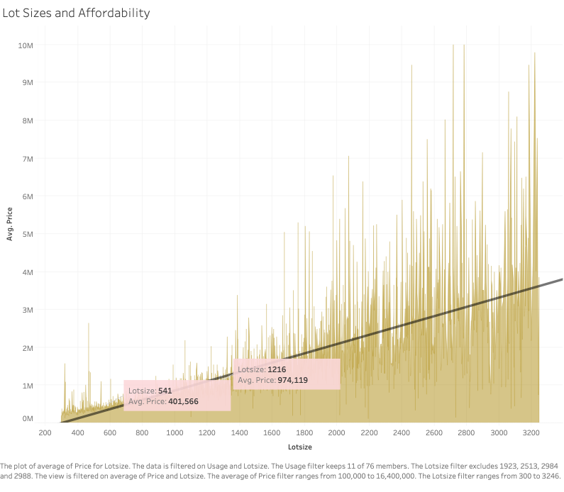

Assignment 2
6.C85 Data Visualization and Society Spring’24
Submission By: Deepali Kishnani (G)
Subtheme: Housing for the Rich
Based on the readings provided on Boston housing, we develop a general conception that housing in Boston has become unaffordable in the past few years because developers are targeting buyers in the upper end of the spectrum. People are buying properties just as investments and not living in them, leading to lack of affordable housing for an average Bostonian. In this report, we analyze four key hypotheses to validate or nullify these conceptions through the provided dataset.
Following set of initial questions guide our hypotheses’ formulation:
1. How unaffordable are these developments for average Bostonians?
2. What proportion of the city is owned by people who don’t live here? What are the connections between high income and absenteeism?
3. What proportion of Boston’s newest and most expensive high-rises are owned by corporations? By absentee owners?
4. How many such investments are flipped? (Flipping is a strategy where an investor purchases a property solely with the intention of selling it for profit rather than using it?
Tools used for Analysis: Tableau and Python (Matplotlib etc.)
Organization of the Report:
We divide the report into two phases, the first phase describes key assumptions and steps taken to clean data and the second phase describes each of the four hypotheses and key insights. Lastly, we summarize all our findings in the summary section.
Phase 1: Exploration
Dataset
Before getting into the analysis, let’s understand the dataset:
*I credit The Warren Group for providing the dataset on Residential Sales in the City of Boston from 2000-2023.
The dataset contains all housing sales transactions in the City of Boston, and includes information on buyer, seller, price, “flips” etc. The dataset contains about 49,301 transactions (rows) and 63 fields (columns), details of which are provided in a separate metadata file. However, as we’ll figure not all the transactions are useful for analysis. For brevity, I have only explained a few instances of data cleanup for assignment credit. Many more such instances and anomalies were found and cleaned up in data analysis of each hypothesis.
Null and Unrealistic Values
We notice odd range of prices ranging from $1 to $999,999,999. We noticed that such odd datapoints either referred to large scale non housing related transactions or had little data available to be studied on. Since price is the main dimension on which we based our analysis, we considered houses priced between $100,000 - $50,000,000. The most expensive house in Boston is approximately the same price. Some of the transactions also involve land and building purchases, which we clean up later.
Figure 1: Price distribution of sales before data cleanup. Figure 2: Price distribution of sales after data cleanup.
We clean up nulls from more features that are relevant:
Figure 3: Year distribution of sales before data cleanup. Figure 4: Year distribution of sales after data cleanup.
Understanding Key Assumptions:
While exploring data, cleanup was a tedious process and that’s when I realized that perhaps having a common understanding of terminology for each of the hypothesis and astutely defining global filters will help me do a better analysis. Therefore, I spent some time defining key terms and assumptions. These terminologies are global for the purpose of this assignment and hold true for the rest of the report.
Affordability:
The U.S. Department of Housing and Urban Development defines affordable housing as housing where the occupant is paying 30% or less of the gross income on total housing, including utilities [2].
With this definition, let’s define what it means for the price of the house to be termed affordable in Boston. We consider the average salary of a Bostonian i.e. $80,000/year [1].
According to Mortgage websites [3], a person making $80,000 should be able to afford a house worth around $335,000 without severe consequences. For purposes of simplicity, let’s consider this number to be $400,000 as an upper bound of affordability as everyone’s finances are different and interest rates differ. Moreover, taking a number higher than average will make our analysis have an upper bound, instead of a lower round, which is preferred for this problem.
Any house priced at $400,000 or lower will be considered affordable.
Usage: We use filters to choose usage that corresponds to residential spaces such as APT for Apartment, CONDO for Condominiums etc. Such filtering leads us to choosing only 11 or 76 usage purposes provided. We disregard commercial and business spaces, including lands for school, hospitals etc. for our analysis and strictly consider residential spaces.
New Houses: We consider only those houses to be new that were constructed in the last 10 years between 2013 and 2023.
Residential Complexes: We consider only the codes of usage that are defined for residential complexes in the metadata (101, 104, 105, 117, 120, 160, 103, 181, 102, 172, 110, 199, 108, 182, 111, 112, 119, 115, 116, 118, 121, 122, 123, 124, 125, 126, 140, 107, 129, 201, 130, 131, 132, 202).
Luxury Houses: We define luxury homes as the residential complexes that form the top 5% quartile in the price range. Note that we stick to our price range discussed in the overview ($100,000 - $50,000,000).
High Rises: We choose the style as “HIGH-RISE”.
Individual Buyer: In the metadata, we don’t have enough information on whether the buyer is an individual homeowner. However, we have binary information on whether the purchase was made by LLC, INC/CORP/CO etc., Trust Entities, Government, Banks etc. One can assume that if the house has not been bought by either of these categories, is perhaps owned by an individual but we find that assumption to be dangerous in absence of any further datal. Therefore, we stick to “Others” as a category for transactions that were not done by any of the binary buyers or sellers specified in the data. This category also forms a majority of our transactions.
With these high-level understanding of the data, let’s move to phase 2, comprising hypothesis validation and insights.
Phase 2 – Hypotheses Validation:
Hypothesis #1: We believe that majority of housing in Boston is unaffordable for average Bostonians.
Measure: We will consider our hypothesis valid if at least 50% houses in our dataset fall in the “unaffordable” category.
We stick with the same definition of Affordable as defined in phase 1, i.e., houses in the price range of $100,000 - $400,000.
As the first step, we analyze the percentage of affordable houses in our dataset. We create a histogram of prices, binned at $20,000.

Of 34,766 houses in our filtered dataset, only 11,386 are affordable, this translates to only 32.75% of all residential houses being affordable.
We dive deeper into this hypothesis and understand what lot sizes and styles are affordable and who owns such affordable houses currently.
1. Lot Sizes:
Assumptions:
Average family size in Boston is 2.2 [4]. According to reports, a family of 2 needs at least 1200 sq feet of lot size [5].

On average, one can find only a 540 sq feet residential apartment in Boston for average affordable housing i.e. about $400,000.
On the flipside, the average sq footage needed by an average family is priced at $1M approximately, about 2.5X of expected price for an average lot size in Boston.
2. Styles

Given that on average a family needs at least 1200 sq feet, and an affordable house is around $400,000, we find that “Low Rise” houses to be the most affordable.
“Condos” and “Conventional” are the least affordable.
3. Ownership

The buyer that proportionally invests the most in affordable houses is “GSE” that stands for Fannie Mae or Freddie Mac.
The buyer that proportionally invests the least in affordable housing is “LLC” or corporations.
4. Areas


North end of the city is far more expensive than the south or the outskirts. There is also little to no overlap between expensive and cheap places suggesting overshooting of prices in pocketed areas.
Hypothesis #2:
We believe that a large proportion of affordable houses in the city is owned by people who don’t live in Boston, and this is affecting the housing crisis.
Measure:
We will consider our hypothesis valid if we see a noticeable trend or pattern in absenteeism.
Assumptions:
In the absence of data on whether the buyers currently occupy these spaces or not, we make three key assumptions:
1. First, If the property was bought or sold by an investor, as indicated by fields like investor_type_purchase or investor_type_sale, it might suggest absentee ownership since investors often do not occupy the properties they own.
2. Second, the field tot_owned indicating the total number of properties owned by each buyer could suggest absentee ownership if the number is high, which might indicate an investor or someone who owns multiple properties and does not reside in them all.
To gauge the impact of investments on ownership in affordable housing price range, we map out the number of transactions made by each type of investor – Institutional, large, medium, non-investor, small, for both buyers and sellers:


About a quarter of all purchases are investments, with small investors making the most investments amongst all types of investors.

This graph shows that there are more players in the “Affordable” housing category who have many properties as compared to players in the other price ranges.
This fact implies that there is more potential for corporates to exploit and drive an increase in prices in the “Affordable” category than in other categories of housing.
Hypothesis #3
Corporate Ownership of High Rises
Based on the readings, we believe that a high proportion of corporations buy Boston’s newest and most expensive high rises.
Measure:
We will consider our hypothesis to be valid if at least 30% of the expensive and new residential places are owned by corporates.
Key Definitions and Assumptions:
We refer to our definitions of new, expensive, and high rise from phase 1 exercise.
Let’s first examine the affordability of high rises in Boston. Continuing with the same definition of affordability as before, we map out the number of affordable versus non affordable high rises in Boston:

The visualization shows that only two of all high-rises in the price range of $100,000-$40M to be affordable i.e. within $400,000.
Th average price of high-rises in Boston stands at $1.4M. Through this visualization, we can also see clusters of high rises in the northern part of Boston, and almost no high rises in the other parts.
This aligns with our first hypothesis that high rises are present in some of the most expensive areas of Boston.

There is almost a 50% overlap in high rises where the owners own more than one property.
This suggests that high rises could be prone to the flip theory, meaning that owners might purchase high rises as an investment rather than for living, resulting in high rates of absenteeism.

‘
We don’t see a significant pattern in purchases made by corporations (INC/CO/CORP.) etc. over the years. In fact, the number of purchases seems to have decreased with time.
This is odd, suggesting deeper analysis into data. This could also be due to Covid, but that’s unlikely as the decline started from 2016 itself.

To understand deeper why businesses have not invested in high rises, we visualize whether the same pattern of less investment since 2016 is visible for other housing styles too.
As we can see, the same pattern of less investment is clearly visible, suggesting either a change in business strategy, lack of data, or some other external factor.

When we visualize the purchases over time for LLCs (Limited Liable Companies), we can clearly see a trend towards more purchases for high rises in the past few years.
LLCs also seem to be investing in more expensive of the high rises. In the absence of businesses not investing, it could be that LLCs are driving this trend.
Hypothesis #4:
We believe that many such investments of high rises are flipped.
(Flipping is a strategy where an investor purchases a property solely with the intention of selling it for profit rather than using it.)
Measure:
We will consider our hypothesis to be valid if there are visible trends of flipping for the expensive and new residential places.

There is a clear trend of higher average flipping index for higher priced styles, suggesting that flipping might be more prevalent in more expensive housing.
We can also see that Condos/Apartments are the most prone to flipping amongst all styles.


To further strengthen our findings, we find a similar trend through this visualisation.
The one on the left shows flipped (red) and non flipped (green) high rises and the visualisation on the right shows flipped (red) and non-flipped (green) low-rises.
Clearly, high rises are far more proportionally prone to flipping than low rises.
Overall Summary and Conclusions:
1. Affordability of Houses in Boston:
Hypothesis: We believe that majority of housing in Boston is unaffordable for average Bostonians.
Findings: Our data analysis showed that about 66% of residential spaces are unaffordable for an average Bostonian earning $80,000. At what’s considered affordable, an average Bostonian can find only 540 sq feet of lot space in the affordable price range (<$400,000). At what’s considered a minimum required lot size of 1200 sq ft for a family of 2, the average size of a family in Boston, Bostonians need to pay at least $1M on average. Based on styles, “low rises” houses are the most affordable, “Condos” and “Conventional” are the least. We also found that trust boards are less likely to invest in affordable houses. This suggests that affordable houses might not stay affordable for long as lowering of investment in affordable housing from trusts can lead to difficulties in price regulation. We also note that the Government is the most likely to invest in affordable housing, followed by Corporations. This insight hints at the problem we are investigating. Such insights validate that corporates invest more in cheaper available houses than in more expensive houses and hence are more likely to “flip” them over.
2. Absenteeism and Affordability
Hypothesis: We believe that a large proportion of affordable houses in the city is owned by people who don’t live in Boston, and this is affecting the housing crisis.
Findings: The dataset didn’t have any direct field which could help us visualize the rates of absenteeism and corporate ownership. We, therefore resorted to assumptions that ownership by investments and having a greater number of total properties are fair estimates of absenteeism and corporate ownership. We found that about a quarter of all purchases are investments, with small investors making the most number of investments amongst all types of investors in both affordable housing and overall. This insight is consistent with trends across the US, where investors own approximately 26% of all housing [6]. Next, we visualized average total properties owned and prices. We found considerably higher total property ownership for affordable housing than for houses priced higher. This is interesting because we’d imagine flipping of houses or corporate ownership to be a high-rise problem. But clearly, it’s a problem in affordable housing too. In fact, such a trend is more dangerous than corporate high-rise acquisition as now such investments are impacting the affordable housing price range rather than only the high rises. This could also mean that the problem can propagate down the economic chain and make situation worse for mid- and low-rise housing in the future.
3. High Rises and Corporates
Hypothesis: Based on the readings, we believe that a high proportion of corporations buy Boston’s newest and most expensive high rises.
Findings: We referred to our definitions of “new”, “expensive”, “affordable” and “high rise” as defined in phase 1. We then visualized the number of “affordable” high rises. Out of 7,000 high rises only 2 were in the affordable category. We further found several clusters of high rises spread across Boston rather than a uniform distribution, suggesting location playing a significant role in these prices. We then visualized the proportion of owners of high rises owning more than one property. We found that almost 50% of overlap in high rises where the owners own more than one property. This suggests that high rises could be prone to the flip theory, meaning that owners might purchase high rises as an investment rather than for living, resulting in high rates of absenteeism. Next, we visualized whether corporate high-rise purchases made in the past twenty years. We found that corporate purchases in high rises had in fact decreased since 2016 than increased, as one might expect. To investigate this further, we looked at purchases of other housing styles and observed a similar trend of lesser investment in housing since 2016. We assume this to be because of external factors that we cannot decipher from current data. We, however, found significant trend in purchases made by LLCs. We saw a trend towards more purchases for high rises in the past few years. LLCs also seem to be investing in more expensive of the high rises. We hypothesize that in the absence of businesses not investing, it could be that LLCs are driving this trend of buying Boston’s newest and most expensive high rises. We need to dive deeper to understand this trend.
4. The Flip Theory
Hypothesis: We believe that many investments of high rises are flipped.
Findings: We found a clear trend of higher average flipping index for higher priced styles, suggesting that flipping might be more prevalent in more expensive housing than in lower priced housing. We can observed that the Condos/Apartments were the most prone to flipping amongst all styles. To further strengthen our findings, we found a similar trend via our visualization of flipping between high and low rises. High rises were far more proportionally prone to flipping than low rises.
While the exercise helped us seem some interesting trends and helped find some unexpected findings such as in hypothesis 3 and hypothesis 2, we need further investigation to arrive at definite conclusions by diving deeper into corporate data sets and absenteeism dataset to validate our new findings and hypotheses.
References:
[1] https://www.ziprecruiter.com/Salaries/-in-Boston,MA
[2] https://realestate.usnews.com/real-estate/articles/what-is-affordable-housing
[3] https://thisismortgage.com/if-i-make-80000-a-year-what-mortgage-can-i-afford/
[4]https://www.census.gov/quickfacts/fact/table/bostoncitymassachusetts/RHI125222
[5] https://www.quickenloans.com/learn/how-big-of-a-house-do-i-need